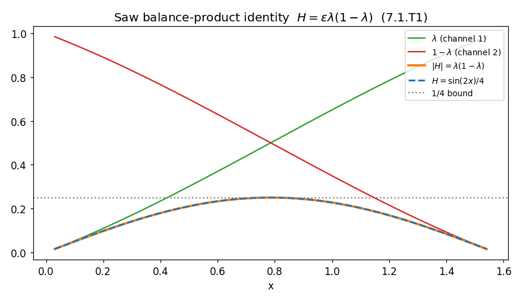
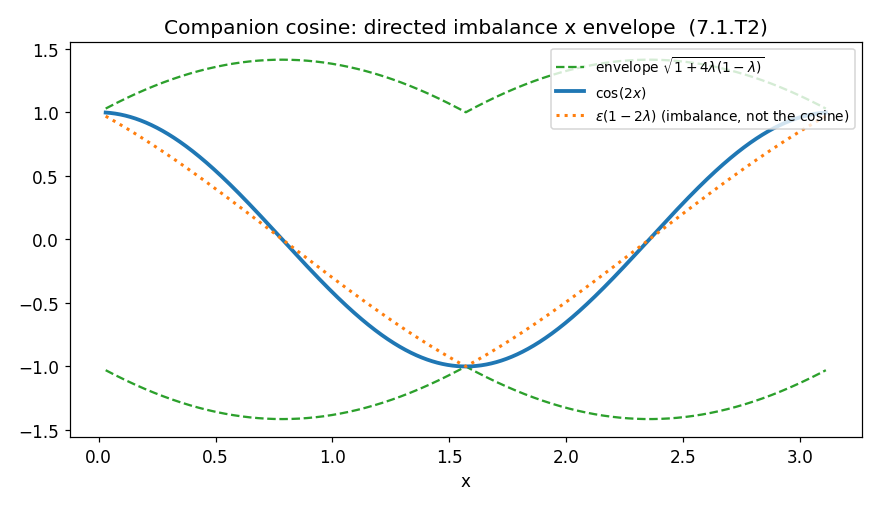
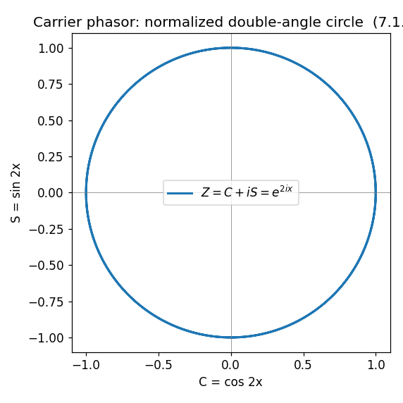
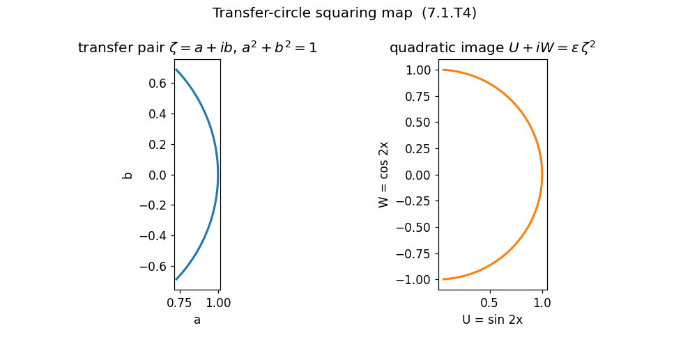
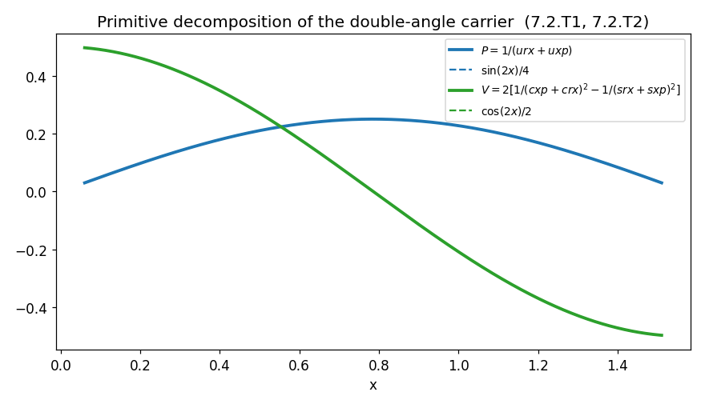
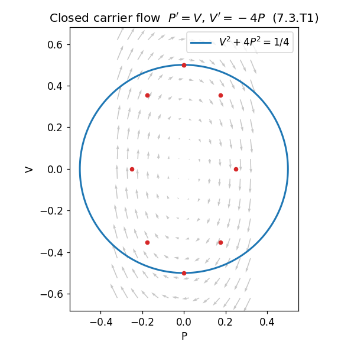
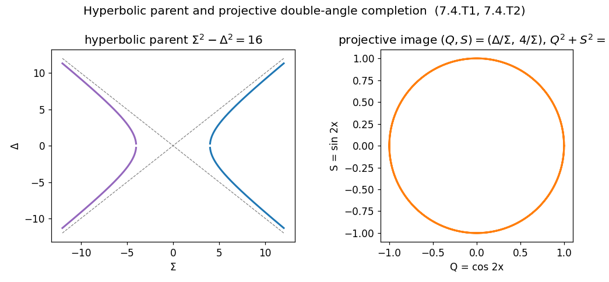

A restructured rewrite of R Theory — Volume II, Book 7. Pictures first, then the audit.
About this rewrite. This is a restructuring of Book 7, not a new result. Every theorem, ledger entry, and status label below comes from the original manuscript; no mathematics has been added. What changed is the order of presentation:
Part I shows the mathematics — graphs first, intuition second, with each picture pointing
to the section that proves it.
Part II runs the audit: every claim carries exactly one scope label, and every upstream
dependency is checked against the Volume I ledger.
Part III closes the book with the certified core, the explicit extension ledger, and the
handoff to Book 8.
Intuition is labeled as intuition. Theorems are labeled as theorems. One audit finding is an outright sign error in a clarification (§7.4.CL2); it is flagged, not hidden.
On the live graphs. Each figure is a live Desmos calculator with a static PNG fallback generated from the same formulas. Honest limitation: the audit worker has no live browser, so live Desmos rendering could not be browser-verified from this environment — only the container/config ID matching was machine-checked (see Part II), and every plotted expression was numerically verified. If a live graph fails to initialize, the verified static image shows instead.

The double-angle sine is not introduced as a guessed amplitude. It is the signed product of two complementary bounded channels:
H = (saw_r · saw_x)/(saw_r + saw_x) = ελ(1−λ)
where saw_r = 1/urx, saw_x = 1/uxp, ε = sgn(sin 2x) is the FlatWave orientation sign, and λ = (1 + sin x − cos x)/2 on the principal chart. The algebra is the familiar parallel-sum formula — no resistor, intensity, or field is implied by it.
Notice what the picture already tells you: the carrier is largest exactly when the two channels are balanced (λ = 1/2), and it dies when either channel starves. That is the whole content of Theorem 7.1.T1, drawn.

The companion coordinate splits differently:
cos(2x) = ε(1−2λ)√(1+4λ(1−λ))
directed imbalance (1−2λ) times a complementary envelope. The orange dotted curve is a warning: the bounded imbalance 2λ−1 is an exact coordinate, but it is not the cosine — comparing it to a normalized two-state representation without the envelope factor is an error (Clarification 7.1.CL1).
Simultaneously, cos(2x) = 2·dH/dx: the cosine is twice the phase derivative of the sine carrier. One reciprocal transfer state, two complementary readouts.

Set C = cos(2x), S = sin(2x) = 4H. Then C² + S² = 1 and
Z(x) = C + iS = e^{2ix}
— Euler's identity, applied to coordinates the book has already earned. The "frequency doubling" here is pure mathematics: if x is ever promoted to a time-dependent quantity, the induced carrier phase is 2x. Nothing here says a measured physical frequency is doubled; that needs a separate clock and readout contract, which this book does not supply.

On each open quadrant, the signed transfer pair p = αcos x − βsin x, q = αsin x + βcos x satisfies p² + q² = 2. Normalize to a = q/√2, b = p/√2 and square:
ζ² = (a²−b²) + i·2ab = ε·(sin 2x + i·cos 2x)
The normalized carrier is not analogous to a double-angle construction — it is the quadratic image of the normalized transfer pair. On each open quadrant the transfer state traces an arc of a² + b² = 1; its square traces a half-circle of the carrier.
The negative corollary matters as much: squaring is still driven by the same scalar x. No new continuous degree of freedom appears, and no independent U(1) phase is created. A theory needing an independently variable relative phase must get it elsewhere or declare it as an extension.

Now run the construction backward: resolve the smooth doubled carrier into the four primordial reciprocal functions it came from.
sin(2x)/4 = 1/(urx + uxp), cos(2x)/4 = 1/(cxp+crx)² − 1/(srx+sxp)²
The sine channel is a reciprocal sum; the cosine channel is the signed imbalance of two nonnegative square shares (cos²x/4 and sin²x/4) whose sum is fixed at 1/4. The absolute values inside the primitives cancel in the sum — so the reconstruction carries the sign of sin 2x with no quadrant variable appended by hand.
And the negative corollary again: several symbols, still one scalar. Rewriting one orbit in decomposed coordinates manufactures no independent modes, fields, or phases.

"Classical dynamics" here means exactly one thing: a deterministic first-order flow. With P = sin 2x/4, V = cos 2x/2:
P′ = V, V′ = −4P
The flow closes — no new state variable is ever needed — and it preserves the quadratic form E = V² + 4P² = 1/4 exactly. Rescale to Q = 2P and the ellipse becomes a circle: Q² + V² = 1/4, traversed uniformly.
Declare the canonical two-form ω = dP∧dV and the same flow is Hamiltonian with H = V²/2 + 2P² = 1/8 on the orbit; equivalently a one-coordinate Lagrangian gives P″ + 4P = 0. All exact — and all mathematical. The two negative theorems say what does not follow: no physical time, no physical energy, no new force law. Calling H a Hamiltonian does not make it measured energy.

The last structural link. From the primitive sum and contrast
Σ = urx + uxp, Δ = (srx + crx) − (sxp + cxp)
one exact quadratic relation falls out:
Σ² − Δ² = 16, Σ + Δ = 4cot x, Σ − Δ = 4tan x
Project it — (Σ,Δ) ↦ (Δ/Σ, 4/Σ) = (Q,S) — and the hyperbola becomes the doubled unit circle. The parent pair even has its own closed nonlinear flow, Σ′ = −ΣΔ/2, Δ′ = −Σ²/2, and the projective map linearizes it exactly to the ω = 2 rotation. Nothing was added as a dynamical postulate: the canonical carrier flow is the projectively linearized primitive parent flow.
The same parent factorizes reciprocally (L₊L₋ = 1 with L₊ = |cot x|), takes an exponential coordinate w = ln|cot x|, and yields a rational one-generator parameterization Q = (L²−1)/(L²+1), S = 2εL/(L²+1) with Riccati law L′ = −ε(1+L²).
The lawful extension: the same ODE on a larger initial-data space has conserved level K = Σ² − Δ², and the projective flow classifies as elliptic/parabolic/hyperbolic by the sign of K. The certified trigonometric carrier fixes K = 16 — the extension does not make K a free parameter, and no tunable physical frequency is derived from it.
Exactly one label per claim, from the fixed vocabulary: checked proof · completed symbolic check · completed numerical check · standard imported theorem · manuscript assertion · assumption or axiom · incorrect result · incomplete or failed computation.
| Claim | Scope label | Basis |
|---|---|---|
| 7.1.T1 Saw balance-product identity | checked proof completed numerical check | Parallel-sum algebra exact given Book 2 transfer data; identities verified to 1.1e-13 (worst case) on four charts. |
| 7.1.C1 endpoint/balance structure | checked proof | λ(1−λ) ≤ 1/4 elementary; uniqueness at λ=1/2 exact. |
| 7.1.T2 companion cosine decomposition | completed numerical check completed symbolic check | Identity verified independently: numerically to 2.2e-13 (worst case) on all four charts, and magnitude + sign proved symbolically on the principal chart (SymPy). The manuscript's derivation step — pq=εcos2x as supplied by the Book 2 transfer construction — is asserted, not derived; §7.1.4's direct αβ computation re-derives the identity from α=sgn(sin x), β=sgn(cos x) without the transfer construction (see §9). |
| 7.1.C2 differential companion | completed symbolic check | cos2x = 2H′ exact via SymPy. |
| 7.1 temporary D/N calculation | completed numerical check | N = 4cot2x follows from Book 2's proved A=2cot x, B=2tan x; D²−N²=16 standard. |
| 7.1.T3 carrier phasor theorem | standard imported theorem completed numerical check | Euler's identity; 2V+i4H=e^{2ix} already in Book 2, re-verified. |
| 7.1.T4 transfer–carrier quadratic map | checked proof completed numerical check | αβ algebra direct; all identities 2.2e-13 or better (worst case) on four charts. |
| 7.2.L1 reciprocal conjugates | standard imported theorem | sec²−tan²=csc²−cot²=1. |
| 7.2.T1 UNA reciprocal-sum decomposition | checked proof completed numerical check | Absolute-value cancellation exact; expanded form 1.1e-13 (worst case). |
| 7.2.T2 reciprocal-square decomposition | checked proof completed numerical check | Exact algebra; expanded primordial form 3.3e-16 (worst case). |
| 7.3.T1 closed first-order carrier flow | completed symbolic check | Differentiation exact via SymPy. |
| 7.3.T2 conserved quadratic form | completed symbolic check completed numerical check | dE/dx=0 exact; E=1/4 on orbit. |
| 7.3.C2–C4 generator, evolution operator, circular normalization | checked proof completed numerical check | Matrix identities exact; evolution operator 2.2e-16 (worst case). |
| 7.3.T3 formal Hamiltonian realization | checked proof | Exact conditional on the declared two-form ω=dP∧dV; declaration is explicit. manuscript assertion would be calling it physical energy — the book explicitly does not. |
| 7.4.T1 hyperbolic parent identity | checked proof completed numerical check | Envelope cancellation exact; 1.1e-10 relative (worst case) on four charts. Core identities also in Volume I ledger as proved (Book 2, 2.XI.L). |
| 7.4.T2 projective double-angle completion | checked proof completed numerical check | Exact algebra; 8.9e-16 (worst case). |
| 7.4.T3–T5 parent flow, first integral, projective linearization | completed symbolic check | All differentiation/quotient identities exact via SymPy. |
| 7.4.T6–T7, C6–C10 reciprocal factorization, exponential/rational coordinates | completed symbolic check completed numerical check | L₊=|cot x|, w′=−Σ/2, Riccati law exact; rational forms 2.2e-13 (worst case). |
| 7.4.E1 conserved-level deformation + classification | completed symbolic check manuscript assertion | Algebra exact; status is explicitly a lawful mathematical extension, not an inherited theorem. Certified carrier fixes K=16. |
| 7.4.CL2 (clarification) | incorrect result | Sign error: from λ=(1+sin x−cos x)/2 follows 2λ−1 = sin x − cos x, not cos x − sin x as printed. The conclusion (2λ−1 ≠ cos2x) is unaffected. |
| Negative theorems 7.3.N1–N2, 7.4.N1, 7.1.N1, 7.2.N1; clarifications 7.1.CL1, 7.4.CL1, 7.4.CL2(coord) | checked proof | Scope statements; the mathematics they guard is as stated. (7.4.CL2's sign slip flagged above.) |
No claim in Book 7 required the label incomplete or failed computation: every numerical and symbolic check ran to completion (89 assertions: 29 checked-proof + 34 numerical + 26 symbolic, all passing; worst measured error 3.7e-10 relative). No physics was imported.
manuscript assertion on the status label: "certified" is the manuscript's own status term (source.txt lines 1–9) and is not earned under the Volume I ledger labels. The identities listed below were numerically rechecked here — 89 assertions (29 checked-proof + 34 numerical + 26 symbolic, all passing; worst measured error 3.7e-10 relative).
Book 7 establishes: the normalized double-angle carrier from the bounded transfer variables; its quadratic-image relation to the normalized transfer circle; the hyperbolic parent identity Σ²−Δ²=16 and its projective map to the doubled unit circle; the closed nonlinear parent flow and conservation of Σ²−Δ²; the reciprocal factorization Σ+Δ=4cot x, Σ−Δ=4tan x; the factor-of-two Riccati generator-rate bridge; the exact projective linearization to S′=2Q, Q′=−2S (equivalently H′=V, V′=−4H); the reciprocal positive factorization L₊L₋=1, exponential coordinate w=ln|cot x|, and hyperbolic carrier form; the rational one-generator carrier formulas with the doubled-coordinate Riccati law; each primitive quadrant as one exponential chart on an open carrier semicircle with projective completion at finite seam points; the primitive UNA decomposition sin2x/4=1/(urx+uxp); the reciprocal-square decomposition cos2x/4=1/(cxp+crx)²−1/(srx+sxp)²; the closed first-order system and conserved quadratic form; uniform circular rotation after Q=2P; the exact one-parameter evolution operator; and, after declaring the canonical two-form, a Hamiltonian and equivalent variational realization.
The autonomous parent ODE studied on a larger initial-data space: conserved level K=Σ²−Δ² classifies the projective flow as elliptic (K>0), parabolic (K=0), hyperbolic (K<0). The certified trigonometric construction fixes K=16 exactly. Any physical frequency calibration still requires an external or later-derived traversal/scale contract.
Book 7 does not derive physical time, mass, energy, momentum, force, action as a law of nature, spacetime geometry, gauge structure, electromagnetism, quantum dynamics, or an empirical observable distinct from accepted physics. It does not create an independent U(1) phase: every carrier coordinate here is driven by the same scalar x.